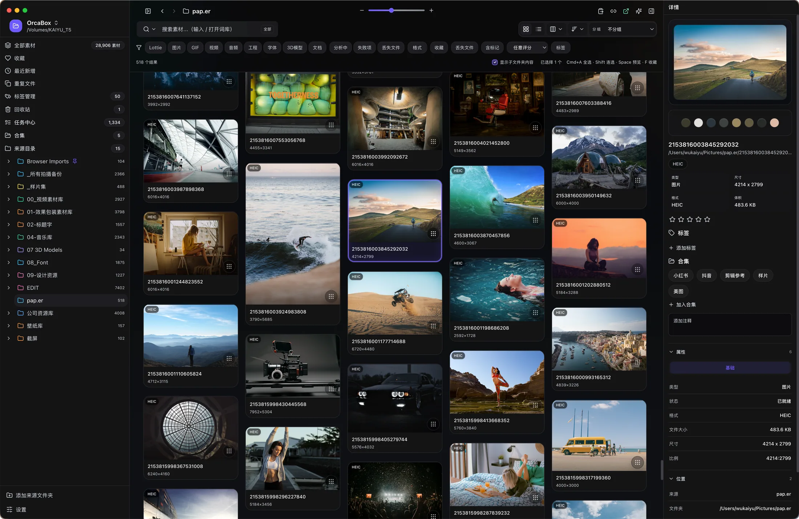
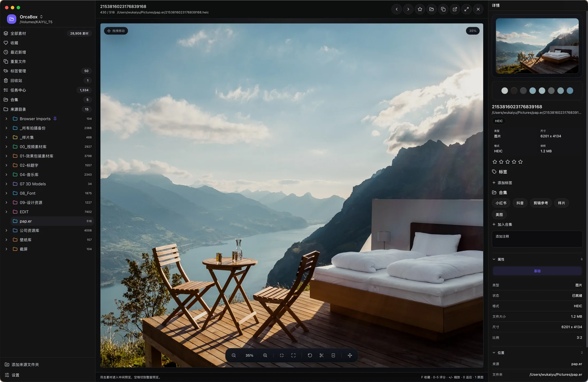
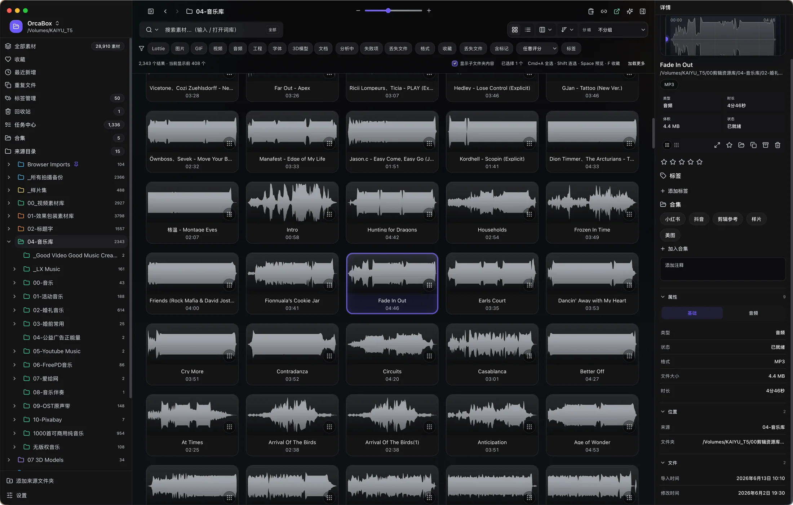
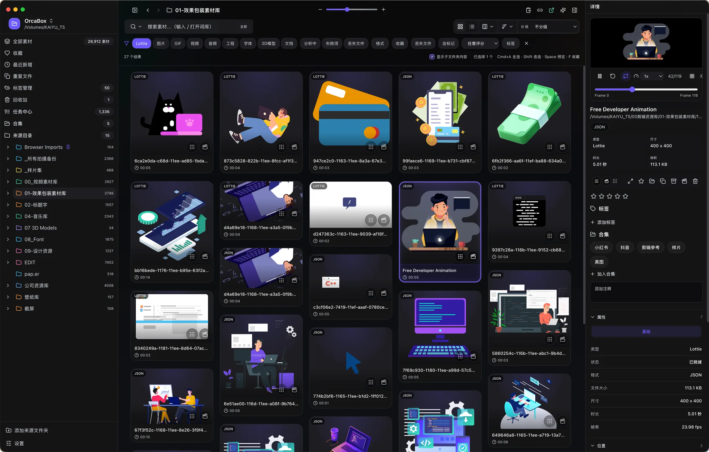
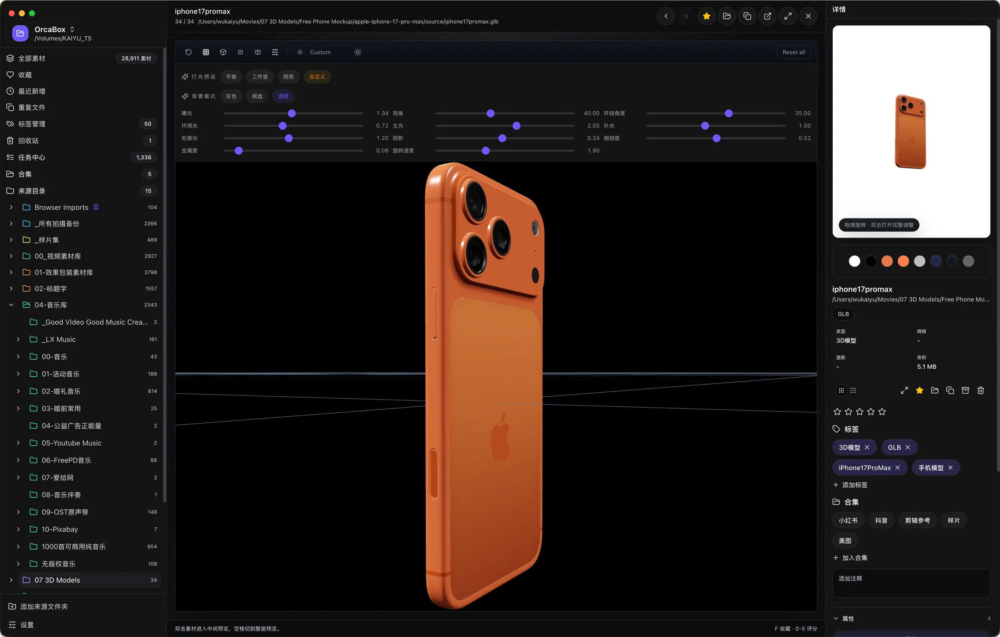
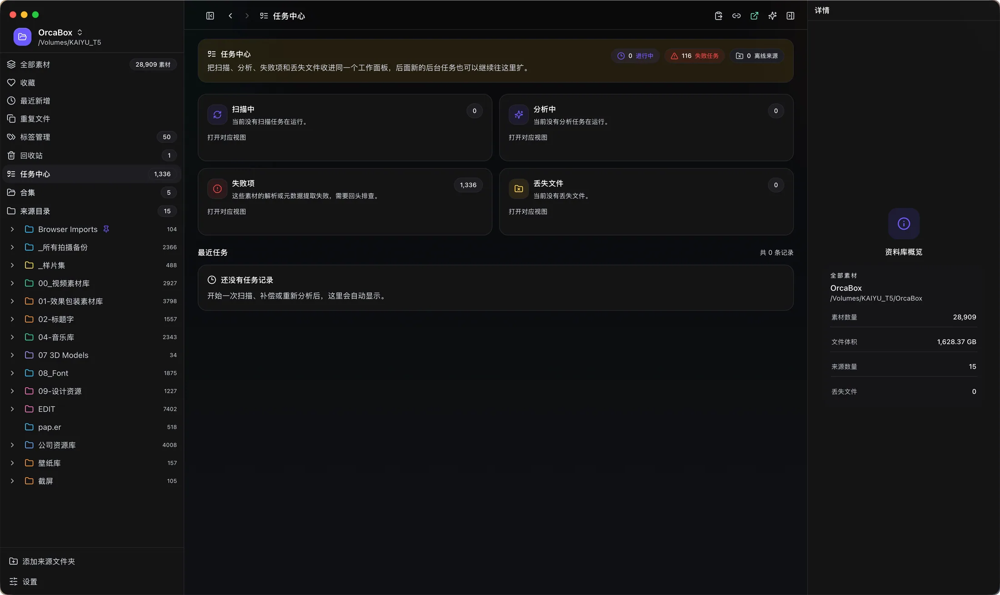

每一项功能都围绕你的实际工作方式构建
直接索引磁盘原始文件，目录即组织结构，不产生任何副本。
文件名、路径、标签多维度搜索，大库也能秒级响应。
chokidar 文件监听，素材变更自动同步，无需手动刷新。
自定义标签、智能合集、评分收藏，构建素材知识库。
多管线路由：浏览器直出、原生硬解、libVLC，专利格式走系统栈。
直拖到设计工具或浏览器。支持批量、壁纸设置、字体安装。
图片、音频、Lottie、3D 模型全格式深度预览

PSD、HEIC、WebP、AVIF、TIFF 等专业格式原生支持。内嵌色彩分析面板，查看色板分布、直方图与 EXIF 元数据。

MP3 / WAV / FLAC / AAC 原生支持。自动生成音频波形图与频谱分析，支持播放预览与批量标签管理。

实时网格预览不降级、播放调速循环控制、JSON 与 .lottie 双格式原生解析。预取保持挂载，拒绝重挂载占位闪烁。

Three.js 驱动，支持 GLB/GLTF、OBJ、FBX、USDZ。自由旋转缩放、材质预览、纹理提取。
后台任务实时可见。AI 基于 ONNX 本地推理，数据不上云

扫描索引、AI 标签分析、缩略图生成——所有后台任务进度一目了然。支持失败重试、批量处理、文件变更自动同步。
ONNX 模型分析图片内容，自动生成描述性标签，支持批量审核应用。
向量嵌入视觉相似搜索，拖入参考图匹配库中风格相近的素材。
按主色调搜索，支持色彩配置管理与预设库，精准定位特定配色资源。
选择磁盘上的素材目录，自动扫描索引，文件不复制不移动。
生成缩略图、提取元数据、分析色彩。实时监听变化，自动同步。
40+ 格式即时预览。标签、合集、评分，建立素材知识库。
直拖到设计工具或浏览器。支持批量、壁纸设置、字体安装。